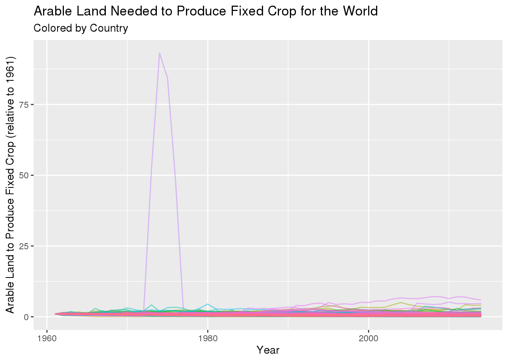
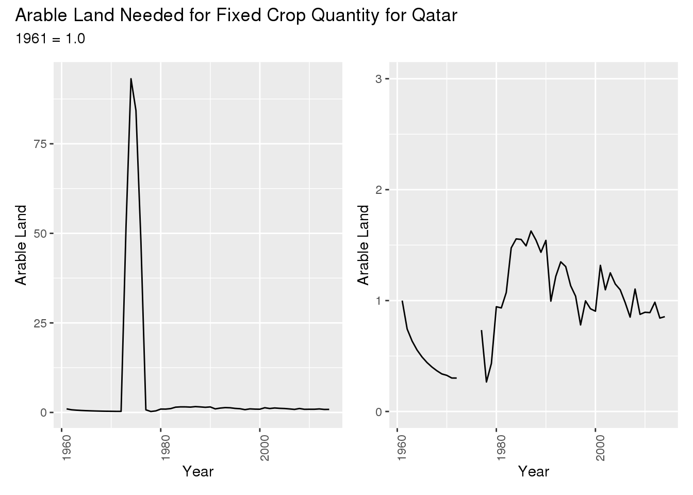
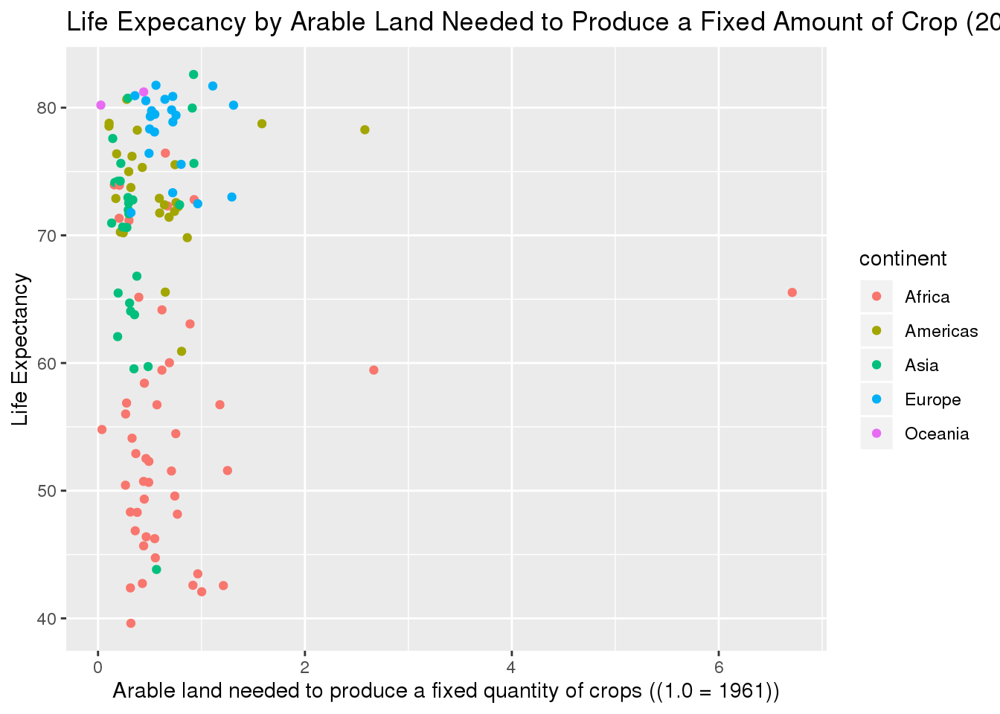

Examination of Crop Efficiency
##load data and libraries
library(tidyverse)
library(tidytuesdayR)
library(here)
library(ggplot2)
library(patchwork)
library(gapminder)
library(readr)
arable_land <- read_csv("./2020-09-01/arable_land_pin.csv")
tractors <- read_csv("./2020-09-01/cereal_yields_vs_tractor_inputs_in_agriculture.csv")
Introduction
For this analysis exploring data regarding farming efficiency in countries worldwide. This data comes directly from Tidy Tuesday however it originally came from Our World in Data. This data set gives lots of data about global crop yields and other information relating to farming. Although for my analysis I specifically focused on the arable_land data set as I wanted to explore topics related to farming efficiency. Overall to explore this subject I created 3 hypotheses to explore and test:
New Zealand was the second most efficient country in 2014 (relative to itself), but was it always that efficient?
What happened with farming efficiency in Qatar?
Does farming efficiency relate to life expectancy?
Exploratory Data Analysis
For this data analysis project I looked at all of the data sets within Global Crop Yields however I found that the arable_land data set gave the best data for the area that I wanted to explore. For this data set there are 11,280 observations and 4 variables. The entity variable gives the name of the country. The code variable gives a three letter code for each country name. The year variable gives the year for which the data was collected. Finally the ‘Arable land needed to produce a fixed quantity of crops ((1.0 = 1961))’ states how much arable land (land that is well suited for growing crops) is needed to get the same amount of food. Something unique about this variable is that is scaled individually to each country. This means that the value under this column gives the amount of arable land needed to produce a certain amount of crop relative to that same country. This is important because otherwise the results would be too inconsistent as factors such as country size, temperature, and type of crop could severely impact the value. One interesting characteristic about this data set is that it is extremely unique to each country. Intuitively this makes sense as every country has different factors that changes their farming efficiency but it does also mean that it is determining worldwide trends can be difficult.
arable_land %>%
filter(!is.na(Code)) %>%
filter(!Entity == "Qatar") %>%
ggplot(aes(x = `Year`, y = `Arable land needed to produce a fixed quantity of crops ((1.0 = 1961))`, group = Entity, color = Entity)) +
geom_line(alpha = 0.5) +
labs(x = "Year", y = "Arable Land to Produce Fixed Crop (relative to 1961)", title = "Arable Land Needed to Produce Fixed Crop for the World", subtitle = "Colored by Country") +
theme(legend.position = "none")
 It is clear to see that most of the data hovers around very small numbers, although there is one country that has been excluded from this data. To better show the trends of the other countries, the data for Qatar is such an outlier that it becomes difficult to see the trends of the other countries. Qatar and its trends will be further explored in Question 2.
It is clear to see that most of the data hovers around very small numbers, although there is one country that has been excluded from this data. To better show the trends of the other countries, the data for Qatar is such an outlier that it becomes difficult to see the trends of the other countries. Qatar and its trends will be further explored in Question 2.
Another way to overall explore the data is to look at the 10 current most efficient countries and the 10 least.
most_efficient <- arable_land %>%
filter(Year == max(Year)) %>%
arrange(`Arable land needed to produce a fixed quantity of crops ((1.0 = 1961))`)
worst_ten <- most_efficient[199:208, ]
p1 <- worst_ten %>%
mutate(mean_arable = mean(`Arable land needed to produce a fixed quantity of crops ((1.0 = 1961))`), median_arable = median(`Arable land needed to produce a fixed quantity of crops ((1.0 = 1961))`)) %>%
mutate(bottom_of_list = "10 least efficient") %>%
ggplot(aes(x = bottom_of_list, y = `Arable land needed to produce a fixed quantity of crops ((1.0 = 1961))`)) +
geom_boxplot() +
labs(x = "Country", y = "Arable Land Needed")
top_ten <- most_efficient[1:10, ]
p2 <- top_ten %>%
mutate(mean_arable = mean(`Arable land needed to produce a fixed quantity of crops ((1.0 = 1961))`), median_arable = median(`Arable land needed to produce a fixed quantity of crops ((1.0 = 1961))`)) %>%
mutate(top_of_list = "10 most efficient") %>%
ggplot(aes(x = top_of_list, y = `Arable land needed to produce a fixed quantity of crops ((1.0 = 1961))`)) +
geom_boxplot() +
ylim(0,0.25) +
labs(x = "Country", y = "Arable Land Needed", title = "Arable Land Needed to Produce a Fixed Amount of Crop")
p3 <- p2 +
ylim(0,6)
(p1 + p3) +
plot_annotation(title = 'Comparison of Arable Land Needed to Produce Fixed Amount of Crop')
p2

top_ten
## # A tibble: 10 x 4
## Entity Code Year `Arable land needed to produce a fixed quantity…
## <chr> <chr> <dbl> <dbl>
## 1 British Virgin … VGB 2014 0.0135
## 2 New Zealand NZL 2014 0.0326
## 3 Djibouti DJI 2014 0.0415
## 4 Kuwait KWT 2014 0.0596
## 5 Guatemala GTM 2014 0.0942
## 6 Chile CHL 2014 0.0944
## 7 Costa Rica CRI 2014 0.105
## 8 Iran IRN 2014 0.115
## 9 Mongolia MNG 2014 0.126
## 10 China, mainland <NA> 2014 0.136
worst_ten
## # A tibble: 10 x 4
## Entity Code Year `Arable land needed to produce a fixed quantity …
## <chr> <chr> <dbl> <dbl>
## 1 French Polynes… PYF 2014 1.72
## 2 Maldives MDV 2014 1.73
## 3 Cuba CUB 2014 2.03
## 4 Martinique MTQ 2014 2.71
## 5 Saint Lucia LCA 2014 2.98
## 6 Barbados BRB 2014 3.00
## 7 Gambia GMB 2014 3.17
## 8 Cook Islands COK 2014 4.09
## 9 Saint Kitts an… KNA 2014 4.72
## 10 Sao Tome and P… STP 2014 5.90
Based on this visualizations it is clear to see that the amount of arable land needed to produce a fixed amount of crops (scaled so that 1.0 = 1961) is drastically different between the top 10 most efficient countries and the lowest 10 countries. The most efficient country in 2014 was the British Virgin Islands (0.0135) and the least efficient was Sao Tome and Principe (5.90). In the first graph the drastic difference between the two is apparent. The second graph is included for reference to show what the box plot for the distribution of the top 10 most efficient countries looks like, however it is critical to notice the difference in y axis scales. For the first visualization the y axis goes from 0 to 6, in contrast for the second plot of just the top 10 countries the y axis goes from 0 to 0.25.
One interesting note about the conclusion of this analyses is how many small countries are present in the top and lowest 10. Intuitively this makes sense as small countries are small because of the lack of food that they can produce on their own or inversely they are very efficient so that they can support the population that they have.
combined <- rbind(top_ten, worst_ten)
tractors %>%
filter(Year == "2014") %>%
filter(Code == "VGB" | Code == "NZL" | Code == "DJI" | Code == "KWT" | Code == "GTM" | Code == "CHL" | Code == "CRI" | Code == "IRN" | Code == "MNG" | Code == "CHN" | Code == "PYF" | Code == "MDV" | Code == "CUB" | Code == "MTQ" | Code == "LCA" | Code == "BRB" | Code == "GMB" | Code == "COK" | Code == "KNA" | Code == "STP") %>%
full_join(combined, by = "Entity") %>%
filter(`Total population (Gapminder)` < 1000000)
## # A tibble: 10 x 9
## Entity Code.x Year.x `Tractors per 1… `Cereal yield (… `Total populati…
## <chr> <chr> <chr> <dbl> <dbl> <dbl>
## 1 Barba… BRB 2014 NA 2700 285000
## 2 Briti… VGB 2014 NA NA 29000
## 3 Cook … COK 2014 NA NA 18000
## 4 Djibo… DJI 2014 NA 1936. 899000
## 5 Frenc… PYF 2014 NA NA 272000
## 6 Maldi… MDV 2014 NA 2405. 435000
## 7 Marti… MTQ 2014 NA NA 381000
## 8 Saint… KNA 2014 NA NA 51000
## 9 Saint… LCA 2014 NA NA 178000
## 10 Sao T… STP 2014 NA 2104. 196000
## # … with 3 more variables: Code.y <chr>, Year.y <dbl>, `Arable land needed to
## # produce a fixed quantity of crops ((1.0 = 1961))` <dbl>
10 of the countries from the 2 extremes (10 most and least efficient countries worldwide) have populations under 1 million people. However only 2 of these countries are on the top 10 list.
The other data that I used in this project is from gapminder. I used this data to help support my further analyses of the impact of farming efficiency. This data was from the Gapminder Project. This data set has 1,704 observations and 6 variables. Country and continent give the name of the country and continent respectively. The year variable gives the year for the data. The lifExp variable gives the average life expectancy in years. The pop variable gives the population size and gdpPercap gives the GDP per person (total Gross Domestic Product divided by the population). Life expectancy and GDP per person are two measures to see how well the citizens of a country are doing. For both variables, the higher the better and therefore the two variables generally are directly related, as shown in the graph below.
gapminder %>%
ggplot(aes(x = gdpPercap, y = lifeExp, color = continent)) +
geom_point(alpha = 0.4) +
labs(x = "GDP per Capita", y = "Life Expectancy") +
ggtitle("Life Expectancy versus GDP per Capita by Contient")
Data Analyses
For my data analysis I will be breaking this section up by question, taking a look at each one individually.
Question 1
New Zealand was the second most efficient country in 2014 (relative to itself), but was it always that efficient? Scaled to 1961 = 1.0, the amount of arable land needed to produce the fixed amount of crop was 0.0326. That is over a 96% percent decrease in 54 years. For this problem I am going to visualize the relative efficiency.
arable_land %>%
filter(Entity == "New Zealand")
## # A tibble: 54 x 4
## Entity Code Year `Arable land needed to produce a fixed quantity of cr…
## <chr> <chr> <dbl> <dbl>
## 1 New Zeala… NZL 1961 1
## 2 New Zeala… NZL 1962 0.932
## 3 New Zeala… NZL 1963 0.863
## 4 New Zeala… NZL 1964 0.767
## 5 New Zeala… NZL 1965 0.780
## 6 New Zeala… NZL 1966 0.793
## 7 New Zeala… NZL 1967 0.786
## 8 New Zeala… NZL 1968 0.661
## 9 New Zeala… NZL 1969 0.608
## 10 New Zeala… NZL 1970 0.637
## # … with 44 more rows
q1 <- arable_land %>%
filter(Entity == "New Zealand") %>%
ggplot(aes(x = Year, y = `Arable land needed to produce a fixed quantity of crops ((1.0 = 1961))`)) +
geom_line() +
labs(x = "Year", y = "Arable Land Needed to Produce Fixed Crop") +
theme(axis.text.x = element_text(angle = 90))
q1 +
plot_annotation(title = "Arable Land Needed for Fixed Crop Quantity for New Zealand") +
plot_annotation(subtitle = "1961 = 1.0")
arable_land %>%
filter(Entity == "New Zealand") %>%
mutate(ratio = `Arable land needed to produce a fixed quantity of crops ((1.0 = 1961))` / lag(`Arable land needed to produce a fixed quantity of crops ((1.0 = 1961))`)) %>%
ggplot(aes(x = Year, y = ratio)) +
geom_point() +
geom_hline(yintercept = 1, color = "purple") +
labs(x = "Year", y = "Ratio of Arable Land Needed", title = "Ratio of Arable Land Needed in New Zealand Compared to the Previous Year")
## Warning: Removed 1 rows containing missing values (geom_point).
The fist visualization shows that for the most part, New Zealand is a country that has been constantly improving its farming efficiency. While There were some increases, the overall trend off the graph is undisputedly decreasing. The second graph takes a look at the ratio from year to year of the amount of arable land needed to produce the same amount of crop. Most of the data is centered around the line y = 1 (graphed in purple). When data points are below this line then that means the year was more efficient than the previous year, when points are above the line then the year was less efficient. However there is one clear outlier in the plot is the at the bottom of the graph for the year 2002. In this year only 0.3 of the arable land used the previous the year was needed to produce the same amount of crop.
Question 2
- Examine the farming efficiency in Qatar and see the results of the dramatic increase. To do this look at a combination of statistical analysis and data visualization.
First, it is important to take a step back. Earlier in the exploratory data analysis portion there was a graph showing the worldwide trends of arable land needed to produce a fixed crop over time. For that graph, Qatar was filtered out. For reference here is the same graph with Qatar included.
arable_land %>%
filter(!is.na(Code)) %>%
ggplot(aes(x = `Year`, y = `Arable land needed to produce a fixed quantity of crops ((1.0 = 1961))`, group = Entity, color = Entity)) +
geom_line(alpha = 0.5) +
labs(x = "Year", y = "Arable Land to Produce Fixed Crop (relative to 1961)", title = "Arable Land Needed to Produce Fixed Crop for the World", subtitle = "Colored by Country") +
theme(legend.position = "none")

Clearly, Qatar (in purple) had the worst farming efficiency by a significant amount. It is so significant that in order to capture it within the graph the y axis scale increases from (0,8) to (0,100). Due to the massive increase in the y-axis, the trends of the other countries have been blurred together. Too see the numbers, the following table shows the overall maximum amount of arable land need to produced a fixed quantity of crops across all the data.
arable_land %>%
arrange(desc(`Arable land needed to produce a fixed quantity of crops ((1.0 = 1961))`))
## # A tibble: 11,280 x 4
## Entity Code Year `Arable land needed to produce a fixed quantity …
## <chr> <chr> <dbl> <dbl>
## 1 Qatar QAT 1974 93.2
## 2 Qatar QAT 1975 84.3
## 3 Qatar QAT 1973 52.1
## 4 Qatar QAT 1976 47.8
## 5 Sao Tome and P… STP 2008 7.17
## 6 Sao Tome and P… STP 2011 7.07
## 7 Sao Tome and P… STP 2009 7.04
## 8 Sao Tome and P… STP 2012 6.96
## 9 Sao Tome and P… STP 2007 6.71
## 10 Sao Tome and P… STP 2004 6.66
## # … with 11,270 more rows
By far the largest amounts of arable land needed to produce a fixed quantity of crop belongs to Qatar, specifically in the early to mid 1970’s.
arable_land %>%
filter(Entity == "Qatar")
## # A tibble: 54 x 4
## Entity Code Year `Arable land needed to produce a fixed quantity of crops …
## <chr> <chr> <dbl> <dbl>
## 1 Qatar QAT 1961 1
## 2 Qatar QAT 1962 0.744
## 3 Qatar QAT 1963 0.635
## 4 Qatar QAT 1964 0.554
## 5 Qatar QAT 1965 0.492
## 6 Qatar QAT 1966 0.442
## 7 Qatar QAT 1967 0.401
## 8 Qatar QAT 1968 0.367
## 9 Qatar QAT 1969 0.339
## 10 Qatar QAT 1970 0.326
## # … with 44 more rows
z1 <- arable_land %>%
filter(Entity == "Qatar") %>%
ggplot(aes(x = Year, y = `Arable land needed to produce a fixed quantity of crops ((1.0 = 1961))`)) +
geom_line() +
labs(x = "Year", y = "Arable Land") +
theme(axis.text.x = element_text(angle = 90))
z2 <- arable_land %>%
filter(Entity == "Qatar") %>%
ggplot(aes(x = Year, y = `Arable land needed to produce a fixed quantity of crops ((1.0 = 1961))`)) +
geom_line() +
labs(x = "Year", y = "Arable Land") +
theme(axis.text.x = element_text(angle = 90)) +
ylim(0, 3)
z1 + z2 +
plot_annotation(title = "Arable Land Needed for Fixed Crop Quantity for Qatar") +
plot_annotation(subtitle = "1961 = 1.0")

a1 <- arable_land %>%
filter(Entity == "Qatar") %>%
mutate(ratio = `Arable land needed to produce a fixed quantity of crops ((1.0 = 1961))` / lag(`Arable land needed to produce a fixed quantity of crops ((1.0 = 1961))`)) %>%
ggplot(aes(x = Year, y = ratio)) +
geom_point() +
geom_hline(yintercept = 1, color = "purple") +
labs(x = "Year", y = "Ratio of Arable Land Needed")
a2 <- arable_land %>%
filter(Entity == "Qatar") %>%
mutate(ratio = `Arable land needed to produce a fixed quantity of crops ((1.0 = 1961))` / lag(`Arable land needed to produce a fixed quantity of crops ((1.0 = 1961))`)) %>%
ggplot(aes(x = Year, y = ratio)) +
geom_point() +
geom_hline(yintercept = 1, color = "purple") +
labs(x = "Year", y = "Ratio of Arable Land Needed") +
ylim(0,2)
a1 + a2 +
plot_annotation("Ratio of Arable Land Needed in Qatar compared to Previous Year")
## Warning: Removed 1 rows containing missing values (geom_point).
## Warning: Removed 3 rows containing missing values (geom_point).
One interesting thing to note is that the spike, while dramatic, is very contained. As shown in the first visualization the arable land needed goes back to what it was after the spike quite quickly as shown on the left graph. The graph on the right zooms in to give a better picture of how the efficiency was actually changing, although this graph does exclude the outliers, it shows that Qatar’s farming efficiency actually fluctuates quite a bit. However the changes from year to year have decreased, shown by the fact that the graph is flattening out. This trend is further illustrated by the second pairs of graphs which detail the ratio of arable land needed to produce a fixed amount of crop compared to the previous year. In a similar style, the graph on the left shows whole picture and the graph of the right is zoomed in, which excludes some of the data but gives a better picture of the more normal data. As shown in the right graph while the ratio was very variable near the time of the spike, it flattens out in recent years, nearing the line y = 1 (shown in purple).
Qatar is not apart of the gapminder data set, however external research has shown that the spike follows the year after a coup took place to overthrow the royal family only a few years after Qatar gained their independence from Great Britain. Additionally using the gapminder website it shows no significant changes for life expectancy or income during the time period of the spike, concluding that the result was most likely due to a power change and lack of organization.
Question 3
Does efficiency relate to life expectancy. To analyze this I am going to use a scatter plot to compare the life expectancy variable form gap minder to the arable land needed to produced a fixed crop variable. I will then use a variety of modeling techniques to explore the results.
population_data <- gapminder %>%
filter(year == max(year))
arable_land_2007_countries <- arable_land %>%
filter(Year == "2007") %>%
filter(!is.na(Code))
combination <- population_data %>%
left_join(arable_land_2007_countries, by = c("country" = "Entity"))
## Warning: Column `country`/`Entity` joining factor and character vector, coercing
## into character vector
ggplot(combination, aes(x = `Arable land needed to produce a fixed quantity of crops ((1.0 = 1961))`, y = lifeExp, color = continent)) +
geom_point() +
labs(y = "Life Expectancy", title = "Life Expecancy by Arable Land Needed to Produce a Fixed Amount of Crop (2007)")
## Warning: Removed 19 rows containing missing values (geom_point).

The above visualization shows that for the most part there is not a strong relationship between the amount of arable land needed to produce a fixed amount of crop and the life expectancy of that country. One thing to note about this visualization is that it is for 2007. In the modern era these two measures may not be as indicative about the other as they might have once been because rich countries are able to import food from other countries. To see if this is the case I will use additional visualization to look at how the amount of arable land needed to produce a fixed quantity of crop also relates to the GDP per capita (also known as GDP per person, it looks at the total GDP divided up by the population).I am using GDP per person because it is often used as a measure of overall living standards for the citizens in the country.
ggplot(combination, aes(x = `Arable land needed to produce a fixed quantity of crops ((1.0 = 1961))`, y = gdpPercap)) +
geom_point() +
labs(y = "GDP per Capita", title = "GDP per Capita by Arable Land Needed to Produce a Fixed Amount of Crop", subtitle = "Data from 2007")
## Warning: Removed 19 rows containing missing values (geom_point).
ggplot(combination, aes(x = `Arable land needed to produce a fixed quantity of crops ((1.0 = 1961))`, y = gdpPercap, color = continent)) +
geom_point() +
geom_smooth(method = "lm") +
labs(y = "GDP per Capita", title = "GDP per Capita by Arable Land Needed to Produce a Fixed Amount of Crop", subtitle = "Data from 2007")
## Warning: Removed 19 rows containing non-finite values (stat_smooth).
## Warning in qt((1 - level)/2, df): NaNs produced
## Warning: Removed 19 rows containing missing values (geom_point).
The two graphs presented are almost identical except for the fact that the last graph includes trend lines and is colored based on continent. The first graph is included to get an overall sense of how the two variables are related worldwide. In it, it is possible to tell that there is a slight direct relation between higher amounts of arable land needed and GDP per person. On the second graph these trends are more pronounced and grouped by continent. Here it is clear to see that that for some continents (Asia, Europe, and Oceania) there is a direct relationship between these variables. On the contrary the Americas and Africa have slightly negative trend lines. Although there are some trends in these data The lack of consistent data points that follow these trends suggest that while GDP per person and arable land needed to produce a fixed quantity may be related, it is not a very strong relationship. This can be further emphasized by the graph below as it shows when outliers are removed the entire graph and trend lines shift.
combo <- combination %>%
arrange(desc(`Arable land needed to produce a fixed quantity of crops ((1.0 = 1961))`))
combination_without_outliers1 <- combo[-1, ]
combination_without_outliers2 <- combination_without_outliers1[-1, ]
combination_without_outliers3 <- combination_without_outliers2[-1, ]
combination_without_outliers4 <- combination_without_outliers3[-1, ]
ggplot(combination_without_outliers4, aes(x = `Arable land needed to produce a fixed quantity of crops ((1.0 = 1961))`, y = gdpPercap, color = continent)) +
geom_point() +
geom_smooth(method = "lm") +
labs(y = "GDP per Capita", title = "GDP per Capita by Arable Land Needed (without Outliers)")
## Warning: Removed 19 rows containing non-finite values (stat_smooth).
## Warning in qt((1 - level)/2, df): NaNs produced
## Warning: Removed 19 rows containing missing values (geom_point).
Conclusion
These data analyses and exploration have allowed additional insight to farming efficiency among countries. From a big picture it was clear to see that since 1961 some countries have become way more efficient at farming. The British Virgin Islands need less than 2 percent of the original amount of arable land in order to get the same crop output. This goes to show how new farming techniques and modern science have contributed to drastically increase farming efficiency. In a further study of this topic, I would like to study how the introduction of Genetically Modified Organism’s (GMO’s) impacted crop output and farming efficiency.
The other big result from these data analyses is the conclusion that the farming efficiency is correlated with the economic welfare of a country. In my analysis I specifically looked at the relationship between arable land needed to produce a fixed amount of crop and GDP per person. While some continents had a stronger correlation than others, no continent had a very strong relationship between the two in 2007. As the world has become more globalized, rich countries have been able to import food and therefore do not need as high farming efficiency, however richer countries can also invest more into making farming more efficient. Therefore it makes sense that the relationship between the two variables is not highly correlated. To further this portion of the analysis I would like to compare the farming index to the 4 indicators of the Human Development Index to investigate further how farming efficiency (or inefficiency) is correlated to the divide between more developed and less developed countries.